S27 — QR Code में जानकारी छुपी कैसे होती है?
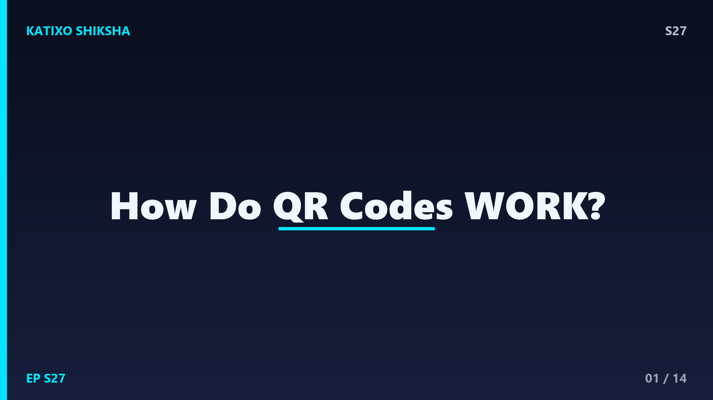
Slide 1दोस्तों, हर दुकान पर, हर poster पर, यहाँ तक कि UPI payment में भी एक काले-सफेद चौकोर pattern दिखता है, जिसे हम QR code कहते हैं। तुम phone का camera उस पर ले जाते हो, और चुटकियों में website खुल जाती है या payment हो जाता है! पर कभी सोचा है कि उन काले-सफेद डब्बों में पूरी जानकारी आखिर छुपी कैसे होती है? यह जादू नहीं, बल्कि कमाल की engineering और maths है। आज Katixo KhojLab पर हम इस square pattern का पूरा रहस्य खोलेंगे। चलो दोस्तों, इस puzzle को decode करते हैं!
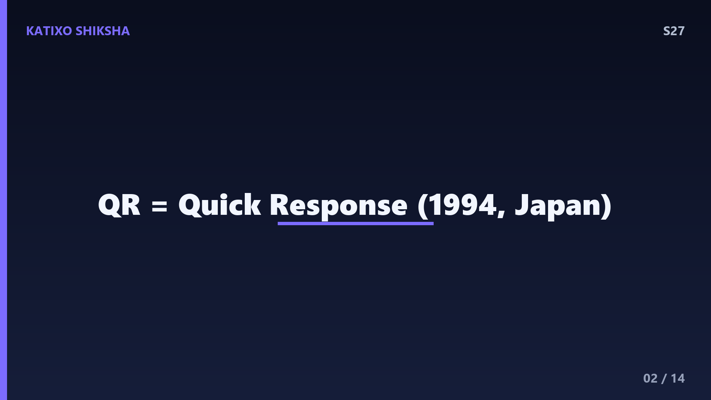
Slide 2सबसे पहले, QR का मतलब समझो। QR यानी Quick Response, यानी तेज़ जवाब। इसे साल 1994 में Japan की एक company Denso Wave के engineer Masahiro Hara ने बनाया था। पहले barcode होते थे, याद है? वो लंबी-लंबी lines वाले, जो सिर्फ एक direction में पढ़े जाते थे और बहुत कम data रख पाते थे। Hara चाहते थे कि गाड़ियों के parts को तेज़ी से track किया जाए। तो उन्होंने एक ऐसा code बनाया जो दो directions, यानी two dimensions में data रख सके। इसीलिए QR code को 2D barcode भी कहते हैं, और यही इसकी सबसे बड़ी ताकत है।
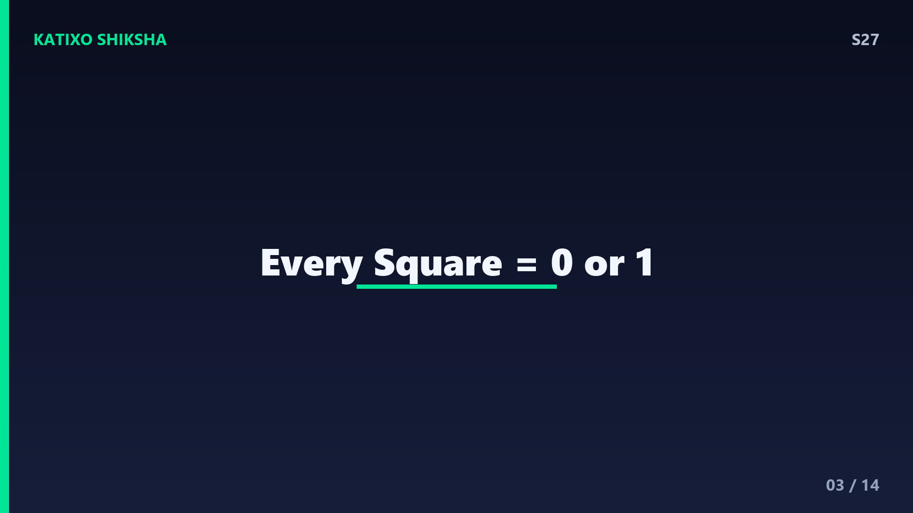
Slide 3अब सबसे ज़रूरी बात, computer सब कुछ binary में समझता है, यानी सिर्फ 0 और 1 में। दोस्तों, QR code में हर छोटा चौकोर डब्बा, जिसे module या pixel कहते हैं, सिर्फ दो में से एक चीज़ है, या तो काला या सफेद। काला module मतलब 1, और सफेद module मतलब 0, या कभी उल्टा भी। तो असल में पूरा QR code 0 और 1 की एक बड़ी सी grid है! जब तुम्हारा phone इसे देखता है, तो वो हर डब्बे को पढ़कर एक लंबी binary string बना लेता है, और फिर उसे text या link में बदल देता है। यही है basic idea!
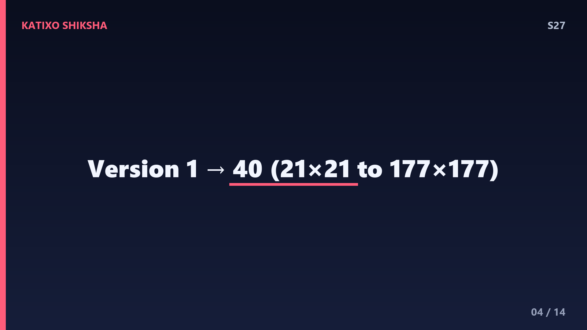
Slide 4अब grid की बात। एक QR code कई sizes में आता है, जिन्हें versions कहते हैं। सबसे छोटा Version 1 होता है 21 गुना 21 modules का, यानी 441 छोटे डब्बे। सबसे बड़ा Version 40 होता है पूरे 177 गुना 177 modules का! जितनी बड़ी grid, उतना ज़्यादा data। एक बड़ा QR code लगभग 7000 numbers या लगभग 4296 letters तक store कर सकता है, और लगभग 2953 bytes data! दोस्तों, यह तो पूरे एक छोटे paragraph से भी ज़्यादा है, सिर्फ एक छोटे से चौकोर निशान में। है ना कमाल की density!
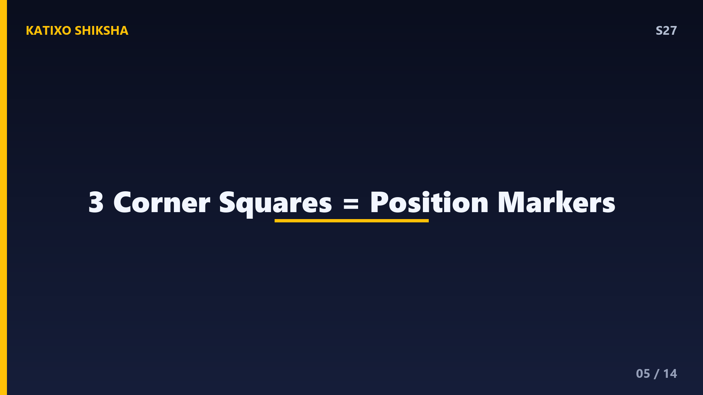
Slide 5अब उन तीन बड़े square निशानों को देखो जो QR code के तीन कोनों पर होते हैं। इन्हें finding patterns या position markers कहते हैं। दोस्तों, इनका काम है phone को बताना, अरे यह रहा QR code, और यह इसकी direction है! चाहे तुम code को उल्टा रखो, टेढ़ा रखो, या किसी भी angle पर, phone इन तीन markers को देखकर तुरंत समझ जाता है कि code कहाँ है और किस तरफ है। बस तीन ही क्यों, चार क्यों नहीं? क्योंकि तीन points से ही direction और orientation पक्की हो जाती है। यह बहुत clever design है!
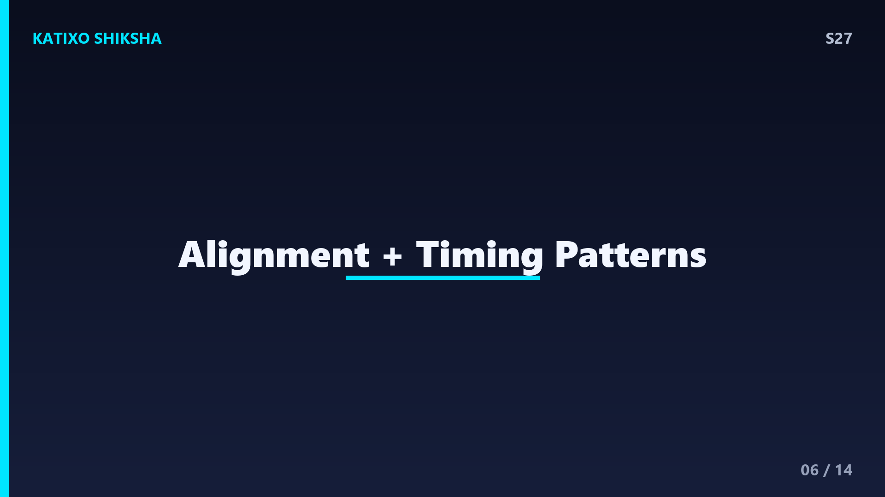
Slide 6अब छोटे-छोटे helper patterns। तीन बड़े markers के अलावा छोटे-छोटे square होते हैं जिन्हें alignment patterns कहते हैं। यह तब काम आते हैं जब QR code किसी मुड़ी हुई या टेढ़ी surface पर हो, जैसे बोतल पर या मुड़े हुए paper पर। यह phone को image की distortion ठीक करने में मदद करते हैं। फिर होती हैं timing patterns, यानी काले-सफेद डब्बों की एक सीधी line, जो दो markers को जोड़ती है। यह एक ruler की तरह काम करती है और phone को बताती है कि grid में कितने modules हैं और हर module कितना बड़ा है। हर हिस्से का अपना काम!
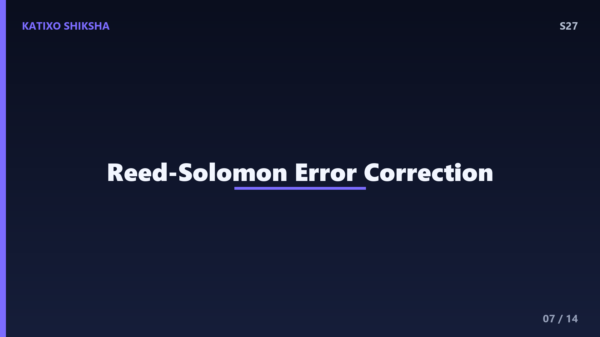
Slide 7अब आता है सबसे genius हिस्सा, error correction. दोस्तों, क्या तुमने कभी ऐसा QR code scan किया है जो थोड़ा फटा हो, गंदा हो, या जिस पर कोई logo छपा हो? फिर भी वो scan हो जाता है! यह कैसे? क्योंकि QR code में data के साथ-साथ extra backup information भी होती है, जिसे Reed-Solomon error correction कहते हैं। यह वही गणित है जो CDs और satellite communication में इस्तेमाल होता है। इसका मतलब code का कुछ हिस्सा गायब या खराब हो जाए, तो भी बाकी जानकारी से पूरा data वापस बन सकता है। यह बहुत बड़ी बात है!
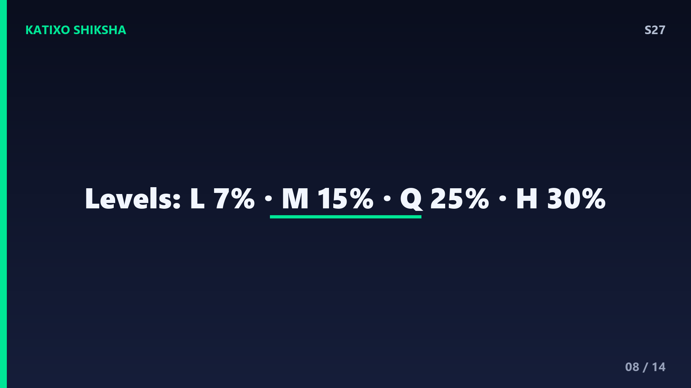
Slide 8Error correction के चार levels होते हैं, और इन्हें याद रखना आसान है। Level L यानी Low, जो लगभग 7 percent damage तक ठीक कर सकता है। Level M यानी Medium, लगभग 15 percent तक। Level Q यानी Quartile, लगभग 25 percent तक। और सबसे ताकतवर Level H यानी High, जो पूरे 30 percent damage तक ठीक कर सकता है! दोस्तों, इसीलिए company लोग अपने logo को बीच में लगा देते हैं, क्योंकि High level होने पर 30 percent code ढका भी हो तो phone फिर भी पढ़ लेता है। पर ध्यान रहे, जितना ज़्यादा backup, उतना कम असली data की जगह।
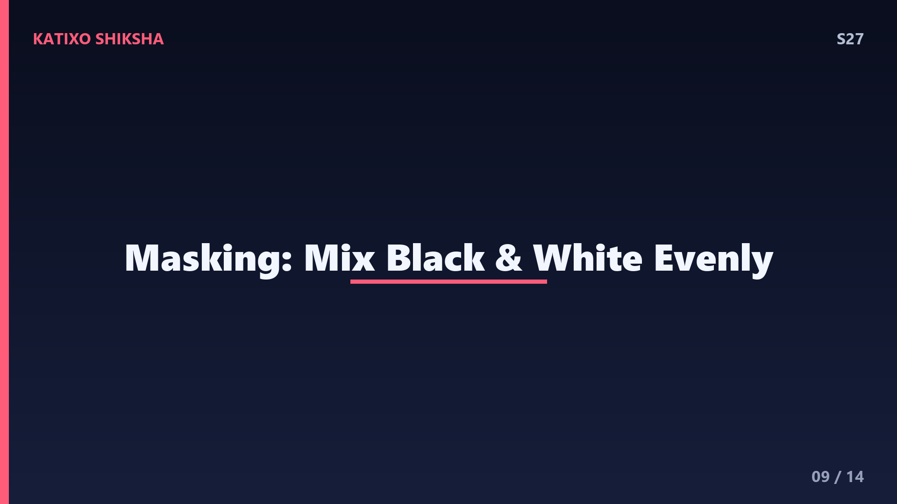
Slide 9अब masking की बात, जो थोड़ी tricky पर बहुत smart है। सोचो अगर QR code में बहुत बड़ा काला हिस्सा या बहुत बड़ा सफेद हिस्सा आ जाए, तो phone को पढ़ने में दिक्कत होती है, क्योंकि patterns confuse हो जाते हैं। इसे ठीक करने के लिए QR code एक mask pattern लगाता है, जो modules को इस तरह flip करता है कि काले और सफेद डब्बे अच्छे से mix रहें। दोस्तों, इसके 8 अलग-अलग masks होते हैं, और QR generator उनमें से सबसे अच्छा वाला चुनता है ताकि code सबसे आसानी से scan हो। यही वजह है हर QR code थोड़ा अलग दिखता है!
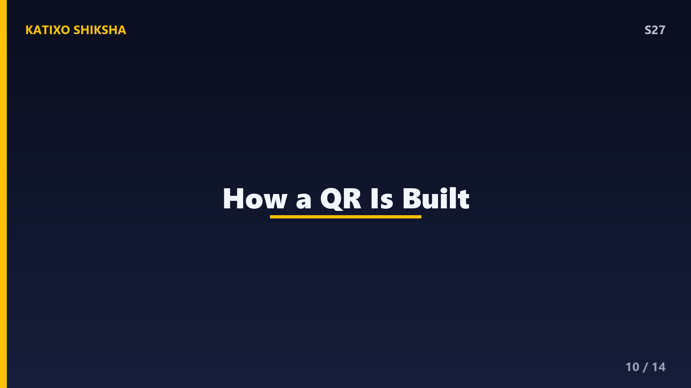
Slide 10अब पूरा process जोड़ते हैं। मान लो तुम्हें website link को QR में बदलना है। पहले, उस text को binary यानी 0 और 1 में बदला जाता है। फिर उसमें Reed-Solomon error correction के backup bits जोड़े जाते हैं। फिर इस पूरे binary data को grid में एक खास zig-zag तरीके से, नीचे से ऊपर और ऊपर से नीचे, भरा जाता है। फिर finding patterns, timing patterns और alignment patterns लगाए जाते हैं। आखिर में best mask चुना जाता है। और तैयार हो जाता है तुम्हारा QR code! Scan करते समय phone यह सब उल्टा करके data वापस निकाल लेता है।
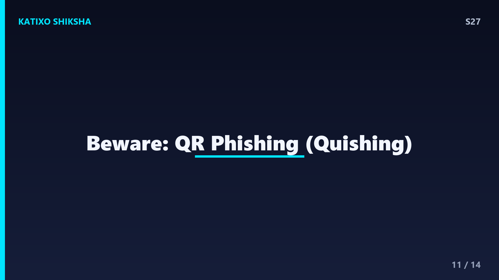
Slide 11एक मज़ेदार और ज़रूरी बात, safety की! दोस्तों, QR code सिर्फ एक link या जानकारी रखता है, उसमें खुद कोई virus नहीं होता। लेकिन खतरा यह है कि वो link किसी fake या dangerous website पर ले जा सकता है, जिसे QR phishing या quishing कहते हैं। ठग लोग असली payment QR पर अपना fake QR चिपका देते हैं! इसलिए हमेशा scan करने के बाद link को ध्यान से पढ़ो, और payment से पहले receiver का नाम ज़रूर check करो। किसी अनजान poster या message के QR पर आँख बंद करके भरोसा मत करना। समझदारी ही सबसे बड़ी security है!
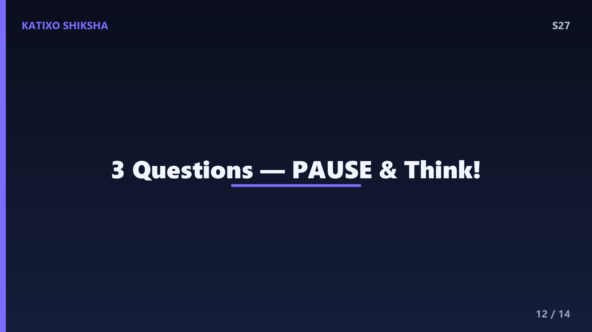
Slide 12Quick brain check, दोस्तों! तीन सवाल, ध्यान से सोचो। पहला, QR code का हर छोटा काला या सफेद डब्बा computer की किस language में बदलता है, यानी कौन से दो numbers में? दूसरा, वो कौन सी खास technology है जिसकी वजह से थोड़ा फटा या logo वाला QR code भी scan हो जाता है? तीसरा, QR code के तीन कोनों पर बने बड़े square निशानों का नाम और काम क्या है? अब video को pause करो और तीनों के जवाब खुद सोचो। बिना scroll किए! तैयार हो? चलो जवाब मिलाते हैं!
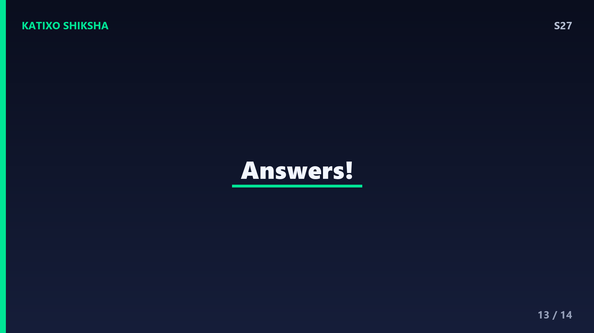
Slide 13जवाब का समय! पहला, QR code का हर डब्बा binary में बदलता है, यानी 0 और 1 में, जहाँ काला आमतौर पर 1 और सफेद 0 होता है। दूसरा, वो technology है Reed-Solomon error correction, जो extra backup data रखकर 30 percent तक खराब हिस्से को भी ठीक कर लेती है, इसीलिए logo वाला QR भी चलता है। तीसरा, तीन कोनों वाले बड़े square को finding patterns या position markers कहते हैं, जो phone को code की जगह और direction बताते हैं। सब सही? शाबाश दोस्तों!
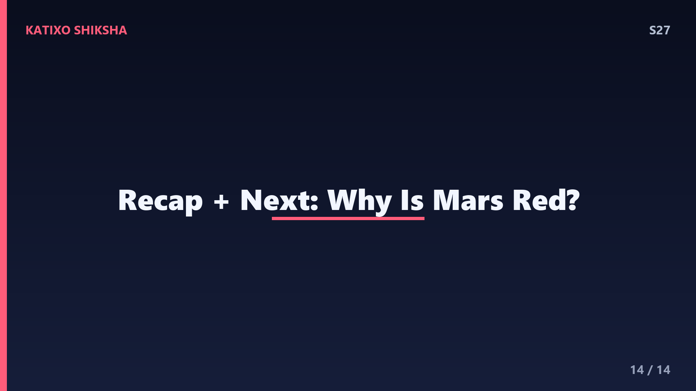
Slide 14तो दोस्तों, आज हमने सीखा कि QR code असल में 0 और 1 की एक चौकोर grid है। finding patterns इसे locate करते हैं, timing और alignment patterns सही पढ़ने में मदद करते हैं, Reed-Solomon error correction खराब हिस्से को ठीक करता है, और masking इसे scan-friendly बनाता है। एक छोटे से चौकोर में हज़ारों characters की जानकारी, यह है maths और engineering का कमाल! और हाँ, scan करने से पहले safety ज़रूर check करना। अगले episode में हम जानेंगे, Mars यानी मंगल ग्रह लाल क्यों दिखता है? Subscribe करना मत भूलना! Bye!